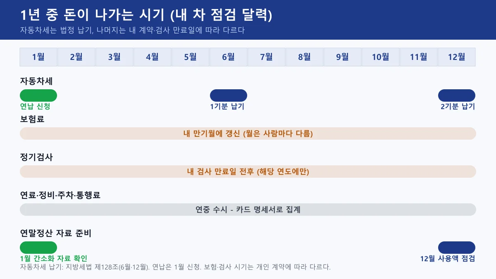
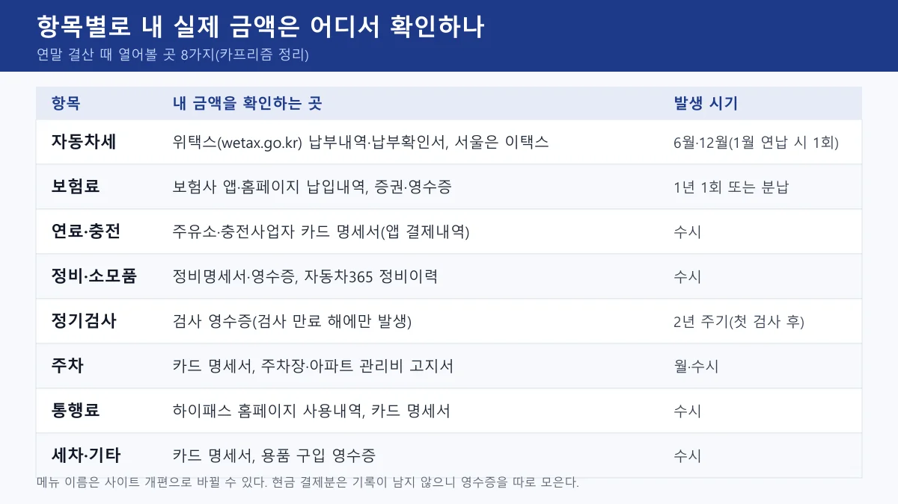
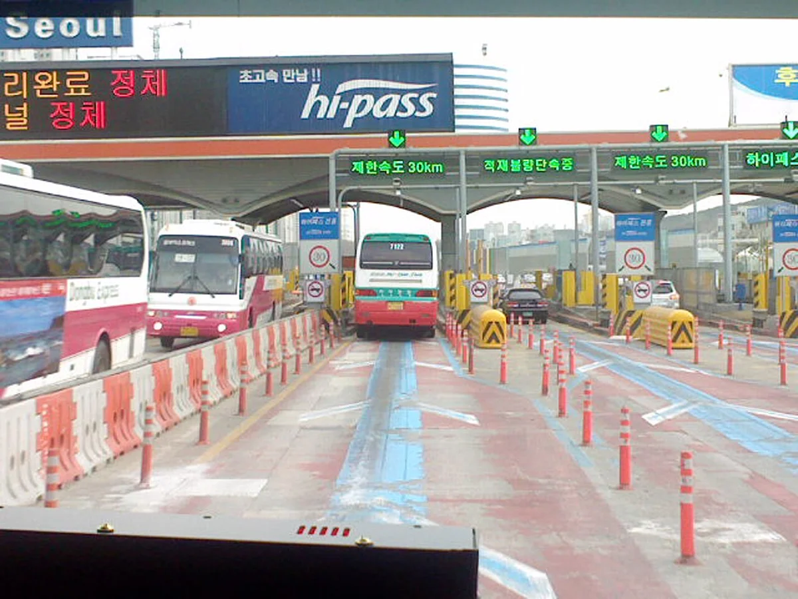
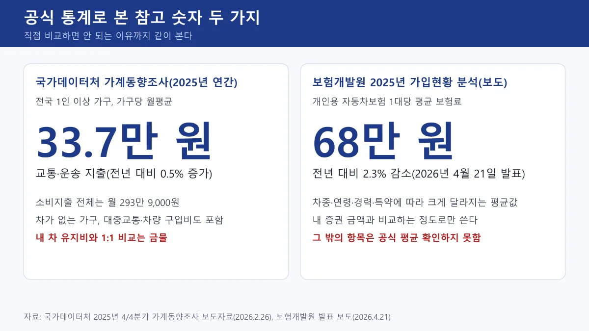
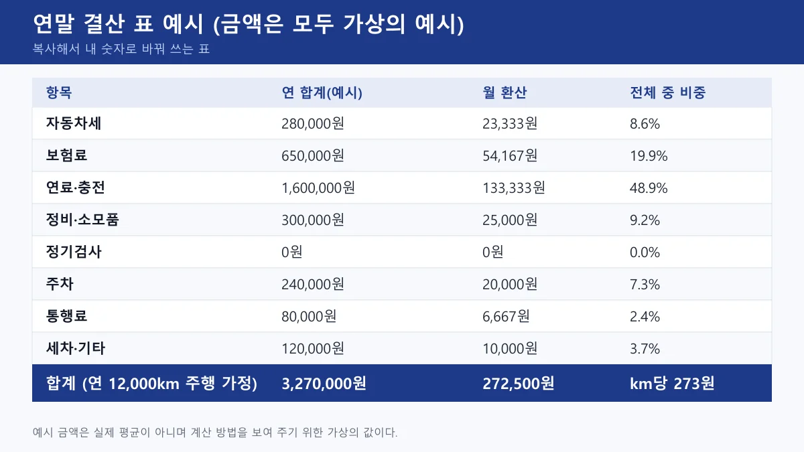
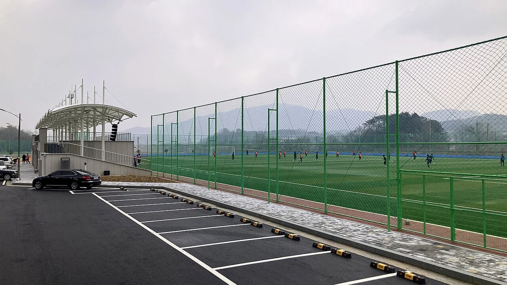
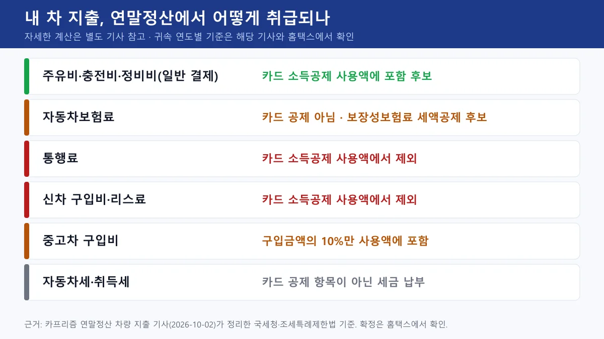

▲ 국내 주유소 전경(2012년 촬영, 연말 결산의 연료비 항목 예시) ⓒ Dquai / Wikimedia Commons (CC BY-SA 4.0)
"올해 내 차에 도대체 얼마를 썼지?" 연말이 되면 문득 이 질문이 떠오르지만, 막상 답하려고 하면 막힌다. 자동차세는 위택스, 보험료는 보험사 앱, 기름값은 카드 명세서, 정비비는 서랍 속 영수증에 흩어져 있기 때문이다.
이 글은 이미 차를 갖고 있는 사람이 12월이나 1월에 한 번에 1년 유지비를 직접 결산하는 방법을 정리한다. 항목 8개를 어디서 확인하는지, 공식 통계로 참고할 만한 숫자가 있는지(없는 건 없다고 밝혔다), 복사해서 쓰는 결산 표, 다음 해에 줄일 3가지를 차례로 다룬다. 첫차를 사는 사람의 첫 1년 비용은 별도 기사에서 계산했으니, 이 글은 이미 쓴 돈을 확인하고 점검하는 쪽에 집중한다.
1. 왜 연말에 결산하나 — 12월에 해야 하는 이유
1년 치를 한 번에 보면 평소엔 안 보이던 것이 보인다. 매달 몇만 원씩 나가던 주차비와 세차비, 한 번에 나가는 보험료와 검사비를 같은 단위(연 합계, 월 환산, km당)로 놓고 비교할 수 있다.
시기도 맞다. 12월은 자동차세 2기분 납기가 있는 달이고(지방세법 제128조 기준 6월과 12월), 곧 1월에는 연납 신청과 연말정산 자료 확인이 이어진다. 보험과 정기검사는 사람마다 만료일이 다르니, 달력에 한 번 적어 두면 결산이 끝난 뒤 다음 해 일정까지 정리된다.

▲ 1년 중 돈이 나가는 시기를 표시한 점검 달력. 카프리즘 제작, 보험·검사 시기는 사람마다 다르다
2. 항목별로 내 실제 금액은 어디서 확인하나
핵심은 "기억"이 아니라 "기록"에서 숫자를 꺼내는 것이다. 아래 표는 항목마다 열어 볼 곳을 정리했다. 사이트 메뉴 이름은 개편으로 바뀔 수 있으니, 아래 이름은 찾을 때의 단서로만 쓰자.

▲ 항목별 확인처 한눈에 보기. 카프리즘 제작
| 항목 | 어디서 확인하나 | 주의할 점 |
|---|---|---|
| 자동차세 | 위택스의 납부내역 조회와 납부확인서, 서울은 서울시 이택스, 또는 고지서·카드 명세서 | 연납을 했으면 1월 한 번, 안 했으면 6월·12월 두 번을 합친다. 연납 구조는 아래 6장 참고 |
| 보험료 | 가입한 보험사 앱·홈페이지의 납입내역, 증권, 영수증 | 분납이면 12개월 합계를 낸다. 마일리지 특약 환급이나 사고 할증이 있었다면 그 금액을 메모한다 |
| 연료·충전 | 카드 명세서, 주유 앱, 전기차는 충전사업자 앱의 결제내역 | 카드사 앱의 업종 분류는 카드사마다 달라서 주유소가 "교통"이나 "기타"로 묶일 수 있다. 가맹점명으로 직접 걸러낸다 |
| 정비·소모품 | 정비명세서와 영수증, 자동차365에 차량을 등록했을 때의 검사·정비 이력 | 정비업자는 자동차관리법 시행규칙 제116조제2항에 따라 점검·정비명세서를 발급한 뒤 72시간 이내에 주행거리·정비 완료일 등을 전산정보처리조직에 전송해야 한다. 이력이 안 보이면 영수증이 기준이다 |
| 정기검사 | 검사소 영수증, 카드 명세서 | 검사 만료가 걸린 해에만 나가는 돈이다. 없는 해는 0원으로 적는다 |
| 주차 | 카드 명세서, 아파트 관리비 고지서, 월 정기주차 영수증 | 월 정기권, 관리비에 포함된 주차비, 시간제 요금을 따로 센다 |
| 통행료 | 하이패스 홈페이지의 이용내역, 후불 하이패스카드 명세서 | 현금 통행료는 기록이 남지 않는다. 그냥 통과한 미납분이 있으면 따로 합쳐야 한다 |
| 세차·기타 | 카드 명세서, 용품 구입 영수증 | 블랙박스·타이어처럼 몇 년에 한 번 사는 용품은 "기타"에 넣고 메모를 남긴다 |
하이패스 이용내역은 한국도로공사의 고속도로 통행료 홈페이지(hipass.co.kr)에서 회원으로 로그인해 확인한다. 로그인 없이 차량번호로 조회할 수 있는 건 미납 통행료이고, 이용내역 상세는 회원 로그인이 필요한 것으로 안내된다. 고속도로 통행료 홈페이지 바로가기
자동차세는 위택스에서 공동인증서나 간편인증으로 로그인하면 납부내역을 조회할 수 있고, 납부확인서 출력도 위택스 기능으로 안내된다. 서울에 등록한 차량은 서울시 이택스를 쓰는 경우가 있어 두 곳 중 내 납부 기록이 있는 곳을 확인한다. 위택스 바로가기 서울시 이택스 바로가기
차량을 직접 등록해 쓰는 자동차365(국토교통부)에서는 본인 소유 차량의 주행거리와 검사·정비 이력을 마이페이지에서 볼 수 있다고 2022년 개편 때 보도됐다. 지금도 같은 메뉴가 있는지는 접속해서 확인하자. 자동차365 바로가기

▲ 경부고속도로 서울 요금소의 하이패스 차로(2009년 촬영). 현금 통행료는 기록이 남지 않아 결산에서 빠지기 쉽다 ⓒ P.Cps1120a / Wikimedia Commons (CC BY-SA 3.0)
3. 항목별 참고 통계 — 있는 건 두 개, 나머지는 확인하지 못했다
평균과 비교하고 싶은 마음은 이해하지만, 공식 통계는 생각보다 항목별로 나뉘어 있지 않다. 이번에 확인한 숫자만 정리하고, 확인하지 못한 항목은 그렇게 표시했다.

▲ 확인된 공식 참고 숫자 두 가지와 읽을 때의 주의점. 카프리즘 제작
| 항목 | 확인한 참고값 | 읽는 법 |
|---|---|---|
| 교통·운송 전체 | 2025년 전국 1인 이상 가구 월평균 33만 7,000원(전년 대비 0.5% 증가), 소비지출 전체는 월 293만 9,000원(국가데이터처 가계동향조사) | 차 없는 가구, 대중교통, 차량 구입비까지 포함한 가구 평균이다. 12개월을 곱하면 약 404만 원이지만 내 차 유지비와 비교하는 기준으로는 쓰지 않는다 |
| 보험료 | 개인용 자동차보험 1대당 평균 약 68만 원(2025년, 전년 대비 2.3% 감소). 보험개발원이 2026년 4월 21일 발표한 분석을 인용한 보도 기준 | 차종·연령·경력·특약이 모두 섞인 평균이다. 내 증권 금액이 평균보다 많다고 곧바로 손해는 아니다 |
| 연료 | 오피넷의 휘발유 가격은 지역별·일별·주간 평균으로 공개된다. 시점별 정확한 단가는 접속해 확인한다 | 가격 평균일 뿐 "운전자 평균 주유비"가 아니다. 내가 넣은 리터당 단가와 비교하는 용도다 |
| 자동차세·정기검사·주차·통행료·정비·세차 | 공식 평균 확인하지 못함 | 자동차세는 배기량·차령 계산식으로 내 금액을 예측할 수 있다. 나머지는 내 기록이 기준이다 |
연료 가격은 오피넷에서 지역별로 조회할 수 있다. 다만 오피넷은 가격 비교 사이트이고 내가 낸 금액을 보여 주지는 않는다. 내 주유 기록은 카드 명세서가 유일한 근거다. 오피넷 바로가기
자동차 한 대의 유지비를 따져 볼 때는 평균보다 km당 비용이 더 쓸모 있다. 결산 합계를 1년 주행거리로 나누면 되고, 주행거리는 연말 계기판에서 연초 계기판을 빼면 나온다. 보험 마일리지 특약을 썼다면 그때 찍어 둔 계기판 사진이 그대로 근거가 된다.
4. 복사해 쓰는 결산 표 — 빈칸 채우기
아래 표를 메모 앱이나 엑셀에 붙여넣고 "내 금액" 칸만 채우면 된다. 월 환산은 12로 나누고, km당 비용은 합계를 연 주행거리로 나눈다.
| 항목 | 확인처 | 내 금액(연 합계) | 월 환산 | 작년과 비교·메모 |
|---|---|---|---|---|
| 자동차세 | 위택스·이택스 | |||
| 보험료 | 보험사 앱 | |||
| 연료·충전 | 카드 명세서 | |||
| 정비·소모품 | 영수증 | |||
| 정기검사 | 영수증 | |||
| 주차 | 카드·관리비 | |||
| 통행료 | 하이패스 홈페이지 | |||
| 세차·기타 | 카드·영수증 | |||
| 합계 | km당 비용 = 합계 ÷ 연 주행거리 |
아래는 가상의 예시 금액을 넣어 본 모습이다. 실제 평균이 아니라 계산 순서를 보여 주기 위한 숫자다. 연 12,000km를 탔다고 가정하면 합계 327만 원, 월 환산 약 27만 3,000원, km당 약 273원이 나온다.

▲ 결산 표 작성 예시(금액은 모두 가상의 예시). 이 예시에서는 연료·충전이 전체의 약 49%로 가장 컸다. 카프리즘 제작
✅ 결산할 때 빠뜨리기 쉬운 것
· 분납한 보험료 — 12개월 합계를 넣었는지 확인한다
· 현금 결제와 지인 이체 — 카드 명세서에 없다. 영수증이나 이체 내역으로 따로 센다
· 아파트 관리비에 섞인 주차비 — 고지서의 항목을 열어 봐야 보인다
· 한 번에 큰 돈이 든 정비 — 타이어·배터리처럼 2~3년에 한 번이면 "연 환산 금액"도 따로 적는다
· 차량 구입비·할부 원리금·감가 — 이 글의 8개 항목에는 넣지 않았다. 필요하면 따로 칸을 만든다

▲ 주차장 예시 사진(보성체육공원, 2023년 2월 촬영). 주차비는 월 정기권·관리비·시간제 요금으로 흩어지기 쉬워 따로 센다 ⓒ Hwan / Wikimedia Commons (CC BY-SA 2.0 KR)
5. 연말정산과 연결되는 항목 — 내 차 지출 중 무엇이 들어가나
결산을 하다 보면 "이 돈은 연말정산에 쓸 수 있나?"가 궁금해진다. 카프리즘이 연말정산 차량 지출 기사에서 정리한 기준으로는 주유비·정비비 같은 일반 결제는 카드 공제 대상이고, 통행료·리스료·신차 구입비는 사용액에서 제외된다. 중고차는 구입금액의 10%만 사용액에 포함된다.
자동차보험료는 카드 공제가 아니라 보장성보험료 세액공제 후보다. 연 납입보험료 100만 원 한도에서 12%이고 다른 보장성보험과 한도를 합산한다고 안내된다. 다만 총급여의 25%를 넘는 사용액부터 공제가 시작되는 문턱 때문에 주유비를 많이 써도 공제액이 0원일 수 있다. 귀속 연도별 공제율과 한도는 해당 기사와 국세청 홈택스에서 확인하자. 국세청 홈택스 바로가기

▲ 내 차 지출 항목별 연말정산 취급(요약). 카프리즘 제작, 상세 기준은 연말정산 기사 참조
📍 결산 표와 연말정산 자료의 차이
- 결산 표는 내 지갑에서 나간 돈 전체를 센다. 연말정산 자료는 공제 대상으로 인정되는 돈만 센다
- 두 숫자가 다른 것은 정상이다. 결산의 통행료와 신차 할부금은 카드 공제 사용액에 들어가지 않는다
- 자동차세는 지방세 납부이므로 카드 소득공제 항목으로 따로 계산하지 않는다
6. 다음 해 줄일 수 있는 3가지 — 비중 큰 항목부터
결산 표에서 비중이 큰 항목부터 보면 줄일 여지가 큰 곳을 빨리 찾는다. 예시 표에서는 연료·충전이 약 49%였지만 이는 가상의 값이므로, 내 표의 1~3위를 기준으로 삼자.
① 연료·충전비 — 주유소 선택과 습관
같은 휘발유라도 주유소 브랜드에 따라 리터당 가격이 다르다. 알뜰주유소와 정유사 브랜드의 격차는 알뜰주유소 가격 비교 기사에서 정리했다. 내 결산에서 연료비 항목을 가맹점별로 나눠 보면 한 주유소만 고정으로 가는지, 고속도로 주유소를 자주 쓰는지가 보인다.
② 보험료 — 갱신 때 특약과 가입 채널
보험개발원 분석을 인용한 보도에 따르면 2025년 주행거리 특약 가입률은 88.4%이고, 가입자의 66%가 환급 기준을 충족해 1인당 평균 13만 3,000원을 돌려받았다. 반대로 말하면 세 명 중 한 명은 환급을 받지 못했다는 뜻이다. 올해 환급 증빙을 놓치지 않았는지 확인하고, 갱신 때 특약 구성을 비교하자. 같은 보도는 온라인 중심의 사이버마케팅(CM) 채널 보험료가 대면보다 평균 약 19% 낮다고 했지만, 가입자 조건이 섞인 평균이라 내 보험료가 그만큼 줄어든다는 뜻은 아니다. 갱신 특약은 보험 갱신 특약 기사를 참고하고, 실제 견적은 보험다모아에서 비교한다. 보험다모아 바로가기
③ 정비·소모품 — 일정 정리와 견적 비교
정비비는 "급하게 맡겨서 비싸게 낸" 경우가 많다. 결산 때 영수증을 보며 미리 알 수 있었던 소모품 교체와 갑작스러운 고장 수리를 나눠 적어 두면, 다음 해 교체 시기를 달력에 넣고 견적을 미리 비교할 수 있다.
📍 소소하지만 확실한 보너스: 자동차세 연납
- 자동차세는 1월에 연납을 신청하면 일부를 공제받는다. 공제 구조와 최근 정정 사항은 자동차세 연납 기사에 있다
- 금액은 작지만 신청 기간이 1월로 정해져 있으니 결산 후 1월 할 일 목록에 넣을 만하다
▲ 국내 주유소 전경(2012년 촬영). 가격 표지판의 단가가 곳마다 다르다 ⓒ Dquai / Wikimedia Commons (CC BY-SA 4.0)
7. 결산 30분 순서 — 실행 체크리스트
- 연초에 찍어 둔 계기판 사진(없으면 보험 마일리지 특약 사진)과 지금 계기판을 비교해 연 주행거리를 계산한다. 연말에 계기판을 한 번 더 찍어 두면 내년 계산이 쉽다
- 카드 명세서 12개월치를 내려받아 주유·충전, 주차, 통행료, 세차 가맹점만 골라 합계를 낸다
- 보험사 앱에서 올해 낸 보험료와 환급·할증 내역을 확인한다
- 위택스에서 자동차세 납부내역을 확인한다(연납이면 1월 한 번, 아니면 두 번)
- 정비·검사 영수증을 모아 올해 항목으로 분류한다
- 결산 표를 채우고 월 환산과 km당 비용을 계산한다
- 표에서 비중 1~3위 항목을 골라 내년 목표를 한 줄로 적는다. 1월에는 자동차세 연납과 연말정산 자료 확인을 달력에 넣는다
📍 이 글이 확인하지 못한 것
- 항목별 전국 평균(자동차세·정비·주차·통행료·세차)은 공식 자료로 확인하지 못했다
- 보험개발원 수치(평균 보험료 68만 원, 마일리지 특약 환급 등)는 원문이 아니라 2026년 4월 보도를 통해 확인했다
- 하이패스·위택스·자동차365의 정확한 메뉴 경로는 사이트 개편에 따라 달라질 수 있어 접속해 확인해야 한다
- 정기검사 수수료는 차종과 검사소별로 달라 공식 금액을 특정하지 않았다.
8. 요약
1년 유지비 결산은 자동차세·보험료·연료·정비·정기검사·주차·통행료·세차 8개 항목을 위택스, 보험사 앱, 카드 명세서, 하이패스 홈페이지, 영수증에서 각각 꺼내 합치는 작업이다. 합계를 12로 나누면 월 환산, 연 주행거리로 나누면 km당 비용이 된다.
공식 참고값은 국가데이터처 2025년 교통·운송 지출 월 33만 7,000원(가구 평균, 내 차와 비교 불가)과 보험개발원 발표 보도 기준 평균 보험료 68만 원 정도이고, 나머지 항목의 평균은 확인하지 못했다. 연말정산에서는 주유비·정비비가 카드 공제 대상, 통행료는 제외, 자동차보험료는 보장성보험료 세액공제 후보다.
다음 해 줄일 후보는 연료·충전, 보험료, 정비·소모품 3가지이며, 내 표에서 비중이 큰 항목부터 손대는 편이 효과가 크다. 1월에는 자동차세 연납과 연말정산 자료 확인을 같이 챙기자.